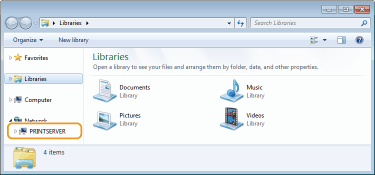
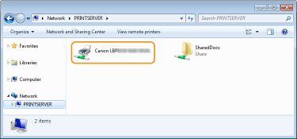

0JJ7-008
You can use the print server to install printer drivers for a shared printer on other computers (clients) on the same network. Because the printer drivers are installed via the print server, users of the other computers do not need to use the printer's CD-ROM/DVD-ROM.
1
Log on to the computer with an administrator account.
2
Open [Windows Explorer] or [File Explorer].
Windows XP/Vista/7/Server 2003/Server 2008
[Start] select [All Programs] or [Programs] [Accessories] [Windows Explorer].
select [All Programs] or [Programs] [Accessories] [Windows Explorer].
[Start]
Windows 8/Server 2012
Right-click the lower-left corner of the screen select [File Explorer].
Right-click the lower-left corner of the screen
3
Select the print server from [Network] or [My Network Places].
To display a computer on the network, you may need to enable [Network discovery] (Enabling [Network discovery]) or search for the computer on the network.


If the print server is not discovered Problems via the Print Server
4
Double-click the shared printer.

5
Follow the instructions on the screen to install the printer drivers.

It may not be possible to install printer drivers via the print server if the client computers and the print server use different processor versions (32-bit or 64-bit) of the operating system. In this case, install additional drivers on the print server. Configuring Settings on the Print Server Computer